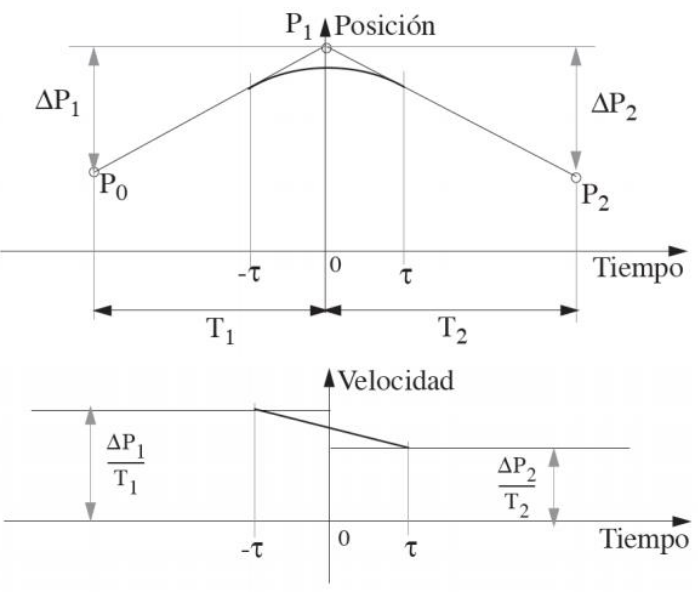
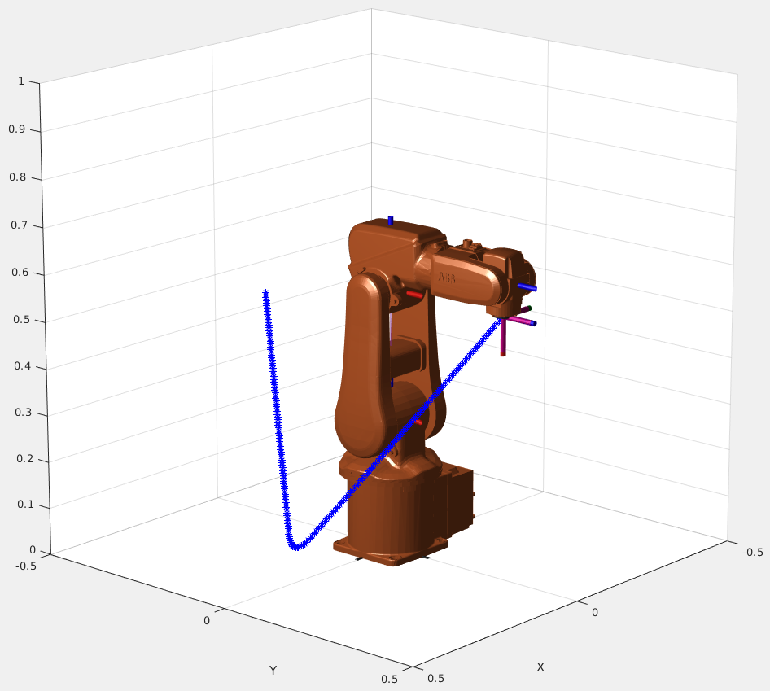
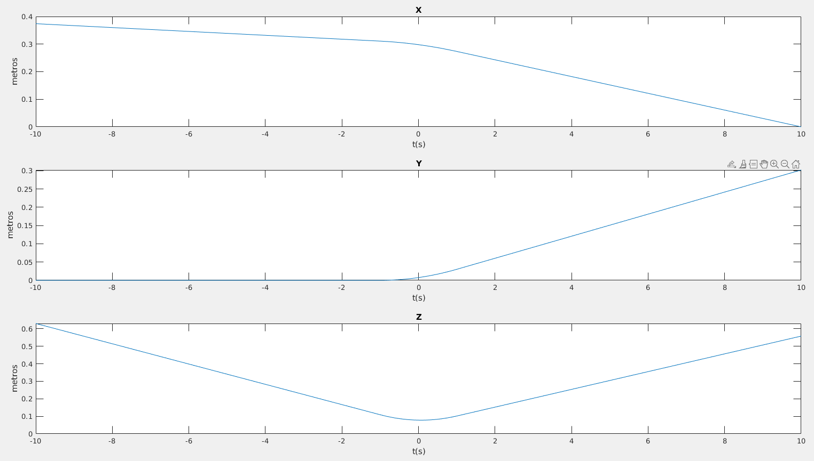
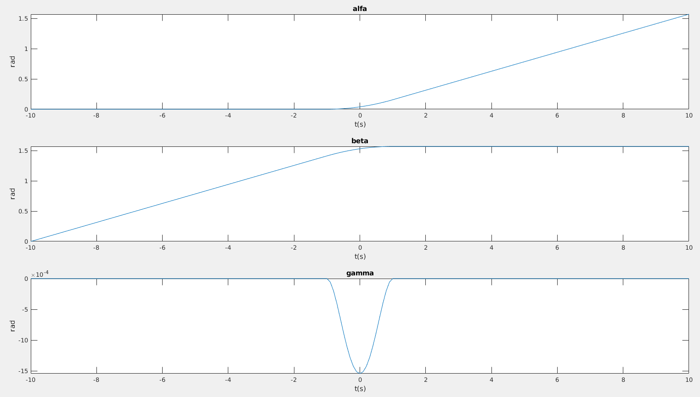

Lab 1: Cartesian trajectory planning¶
This exercise illustrates the generation of Cartesian trajectories using one of the methodologies studied in this course. For this purpose, a series of functions will be used:
Matlab functions¶
-
cartesian_planning: Script that performs the complete simulation during all proposed segments, using the Robotic Toolbox with the ABB IRB120 manipulator model and the graphical representation of the temporal evolution of Cartesian trajectories and orientation in \(ZYZ\) Euler angles.cartesian_planning.m% Lab 1: Cartesian trajectory planning clearvars P0=[1 0 0 0.3740; 0 1 0 0; 0 0 1 0.6300; 0 0 0 1]; P1=[0 0 1 0.3038; 0 1 0 0; -1 0 0 0.0510; 0 0 0 1]; P2=[0 -1 0 0; 0 0 1 0.3020; -1 0 0 0.5580; 0 0 0 1]; tau=1; T=10; %% Exercise 1: Cartesian interpolation [p1, q1]=qpinter(P0, P1, 0) %% (1)! [p2, q2]=qpinter(P0, P1, 1) %% Exercise 2: Smooth trajectory generation % Load ABB IRB120 model [IRB120, IRB120Data] = loadrobot('abbIrb120','DataFormat','row','Gravity',[0 0 -9.81]); Home=IRB120.homeConfiguration; % Use home position as start setting for inverser kinematics % Create object for inverse kinematics ik_IRB120 = inverseKinematics('RigidBodyTree', IRB120); % Tolerances weights=[0.25 0.25 0.25 1 1 1]; % Create figure to represent the manipulator f1=figure(1) set(f1,'Name','Manipulador'); % Calculate the interpolation for the whole segment x=[]; y=[]; z=[]; alfa=[]; beta=[]; gamma=[]; for t=-T:0.1:T % Call the function to generate the smoothed cartesian path [P,Q]=generate_smooth_path(P0,P1,P2,tau,T,t); %% (2)! x=[x P(1)]; y=[y P(2)]; z=[z P(3)]; Tq=q2tr(Q); Tq(1:3,4)=[P(1) P(2) P(3)]'; % Complete homogeneous transofrmation matrix ZYZ=tr2zyz(Tq); alfa=[alfa,ZYZ(1)]; beta=[beta,ZYZ(2)]; gamma=[gamma,ZYZ(3)]; % Get position and orientation in joint space (ik) [robot_pose, solnInfo]=ik_IRB120('tool0',Tq, weights, Home); % Represent each configuration of the robot ax=show(IRB120, robot_pose); axis([-0.5,0.5,-0.5,0.5,0,1]); hold on plot3(ax, x, y, z, 'b*') hold off drawnow end %% Exercise 3: Graphical representation % Represent cartesian position t=-T:0.1:T; f2=figure(2); set(f2,'Name','Cartesian position'); subplot(3,1,1),plot(t,x);title('X');xlabel('t [s]'); ylabel('position [m]'); subplot(3,1,2),plot(t,y);title('Y');xlabel('t [s]'); ylabel('position [m]'); subplot(3,1,3),plot(t,z);title('Z');xlabel('t [s]'); ylabel('position [m]'); % Represent cartesian orientation as Euler angles f3=figure(3); set(f3,'Name','Ángulos de Euler'); subplot(3,1,1),plot(t,alfa);title('alfa');xlabel('t [s]'); ylabel('angle [rad]'); subplot(3,1,2),plot(t,beta);title('beta');xlabel('t [s]'); ylabel('angle [rad]'); subplot(3,1,3),plot(t,gamma);title('gamma');xlabel('t [s]'); ylabel('angle [rad]');- Here you call the function
qpinterthat you have to code in Exercise 1 - Here you call the function
generate_smooth_paththat you have to code in Exercise 2
- Here you call the function
-
function [pr, qr]=qpinter(P1, P2, lambda): You have to code it. Explained in Exercise 2qpinter.mfunction [pr,qr]=qpinter(Pa,Pb,t) % Interpolate the position pr = %% (1)! % Interpolate the orientation qr = %% (2)! end- Compute the position interpolation.
- Compute the orientation interpolation
-
function P=generate_smooth_path(P0, P1, P2, tau, T, t): You have to code it. Explained in Exercise 2generate_smooth_path.mfunction [P, Q]=tramoq(P1, P2, P3, tau, T, t) % Function that calculates the transformation (P - position, and Q - orientation) from P1 to P3 smoothing in P2 with Taylor method (quaternions) if (t<-T || t>T) % Out of allowed range disp('Parameter t out of range'); else if (t<=-tau) % First segment (lineal) %% (1)! elseif (t>=tau) % Third segment (lineal) %% (2)! else % Second segment (smoothing) % Position interpolation %% (3)! % Orientation interpolation %% (4)! end end end- Include the code for the first segment (from -t to T) using qpinter
- Include the code for the third segment (from T to t) using qpinter
- Include the code for the position smoothing in the second segment with Equation P(t)
- Include the code for the orientation smoothing in the second segment with Equation q(t)
-
function T=zyz2tr(a): Converts the row vector \(a=[\alpha,\beta,\gamma]\) of \(ZYZ\) Euler angles to a \(4 \times 4\) homogeneous transformation \(T\).Show function zyz2tr.m
zyz2tr.m% function T=zyz2tr(a) % % Conversión del vector fila 'a' de angulos de Euler ZYZ a % transformación homogénea 'T' de 4x4 % % Víctor F. Muñoz 2000 function T=zyz2tr(a) s=sin(a); c=cos(a); T=[c(1)*c(2)*c(3)-s(1)*s(3) -c(1)*c(2)*s(3)-s(1)*c(3) c(1)*s(2) 0 s(1)*c(2)*c(3)+c(1)*s(3) -s(1)*c(2)*s(3)+c(1)*c(3) s(1)*s(2) 0 -s(2)*c(3) s(2)*s(3) c(2) 0 0 0 0 1]; -
function a=tr2zyz(T, m): Obtains the representation \(a=[\alpha,\beta,\gamma]\) of the \(ZYZ\) Euler angles from the transformation \(T\). The sign of the parameter \(m\) chooses the solution. If not specified, the positive solution is taken by default.Show function tr2zyz.m
tr2zyz.m% function a=tr2zyz(T,m) % % Obtiene la representación a=[alfa,beta,gamma] de los ángulos de Euler ZYZ % de la transformación T. El signo del par�metro 'm' elige la solición. Si no % se especifica este, se toma por defecto la solución positiva. % % Víctor F. Muñoz 2000 function a=tr2zyz(T,m) if nargin==1, m=1; end M=sign(m); Sbeta=M*sqrt(T(3,1)^2+T(3,2)^2); beta=atan2(Sbeta,T(3,3)); if abs(Sbeta)>1e-3, alfa=atan2(T(2,3)/Sbeta,T(1,3)/Sbeta); gamma=atan2(T(3,2)/Sbeta,-T(3,1)/Sbeta); else alfa=0; gamma=atan2(T(2,1),sign(T(3,3))*T(1,1)); warning('Configuraci�n degenerada'); end a=[alfa,beta,gamma]; -
function q=tr2q(T, m): Converts the homogeneous matrix \(T\) to quaternion \(q\). The sign of \(m\) chooses the positive or negative solution. If \(m\) is omitted, the positive solution is taken by default.Show function tr2q.m
tr2q.m% function q=tr2q(T,m) % % Realiza la conversión a cuaternio q de la matriz homogénea T. Las dos % soluciones se eligen mediante el parámetro m. El signo de m elige la % solución positiva o la negativa. Si m se omite se toma la positiva por defecto. % % Víctor F. Muñoz 2000 function q=tr2q(T,m) if nargin==1, m=1; end M=sign(m); S=M*sqrt(T(1,1)+T(2,2)+T(3,3)+1)/2; if abs(S)>1e-3, X=(T(3,2)-T(2,3))/4/S; Y=(T(1,3)-T(3,1))/4/S; Z=(T(2,1)-T(1,2))/4/S; else S=0; X=M*sqrt((T(1,1)+1)/2); Y=M*sqrt((T(2,2)+1)/2); Z=M*sqrt((T(3,3)+1)/2); end q=[S,X,Y,Z]; -
function T=q2tr(q): Calculates the \(4 \times 4\) homogeneous matrix \(T\) corresponding to the quaternion \(q\).Show function q2tr.m
q2tr.m% function T=q2tr(q) % % Calcula la matriz homogénea T de dimensiones 4x4 correspondiente % al cuaternio q. % % Víctor F. Muñoz 2000 function T=q2tr(q) S=q(1); X=q(2); Y=q(3); Z=q(4); T=[1-2*Y^2-2*Z^2 2*X*Y-2*S*Z 2*X*Z+2*S*Y 0 2*X*Y+2*S*Z 1-2*X^2-2*Z^2 2*Y*Z-2*S*X 0 2*X*Z-2*S*Y 2*Y*Z+2*S*X 1-2*X^2-2*Y^2 0 0 0 0 1]; -
function q=qqmul(q1, q2): \(q\) is the quaternion resulting from multiplying \(q_1\) by \(q_2\). Both \(q_1\) and \(q_2\) must be two row vectors of four components. The result will also have the same format.Show function qqmul.m
qqmul.m% function q=qqmul(q1,q2) % % Multiplicación de cuaternios. 'q' es el cuaternio resultado de multiplicar % q1 por q2. Tanto q1 como q2 deben ser dos vectores filas de cuatro componentes. % El resultando tambi�n tendr� el mismo formato. function q=qqmul(q1,q2) q=[q1(1)*q2(1)-q1(2:4)*q2(2:4)', ... q2(1)*q1(2:4)+q1(1)*q2(2:4)+cross(q1(2:4),q2(2:4))];
Cartesian interpolation¶
Cartesian interpolation is characterized by achieving a linear variation of position and orientation, the latter uses the representation of orientation through quaternions. Therefore, when linking two rectilinear displacements, a velocity discontinuity occurs at the transition point.
Figure 1 shows the described situation, using the example of concatenating a displacement from location \(P_0\) to \(P_1\) with another from \(P_1\) to \(P_2\). To avoid the velocity discontinuity that occurs at \(P_1\), a constant acceleration is used to adapt the velocity variation of vector \(X\) from the first segment to the second.

Figure 1. Diagram of the variation of position and velocity in the movement from \(P_0\) to \(P_2\) via \(P_1\).
This way, \(-\tau\) units of time before reaching \(P_1\) (time 0), the velocity will be linearly changed from \(\Delta P_1/T_1\) to \(\Delta P_2/T_2\), to accommodate the velocity \(\tau\) units of time after passing \(P_1\). Thus, the problem is defined as the calculation of a quadratic function \(X(t)\) that starts at point \(P_A\) and ends at \(P_B\) (start and end points of the smoothing) defined in the time range \([-\tau, \tau]\).
Applying the boundary conditions at both ends of the segment and defining the acceleration in the area, the position is obtained as:
$$ P(t) = P_1 - \frac{(\tau - t)^2}{4\tau T_1} \Delta P_1 + \frac{(\tau + t)^2}{4\tau T_2} \Delta P_2 $$
And the orientation as:
$$ q(t) = q_1 \cdot q \left[ -\frac{(\tau - t)^2}{4\tau T_1} \theta_1, n_1 \right] \cdot q \left[ \frac{(\tau + t)^2}{4\tau T_2} \theta_2, n_2 \right] $$
Exercises¶
Considering all the above, and the following values for \(P_0, P_1, P_2\), the following exercises are requested:
1. Quaternion interpolation¶
Define the quaternion interpolation function based on the Taylor method [pr, qr]=qpinter(P1, P2, lambda) that calculates the intermediate quaternion between \(q_1\) (initial) and \(q_2\) (final). The value \(\lambda\) must satisfy \(0\leq \lambda \leq 1\), so that [p1, q1]=qpinter(P1, P2, 0) and [p2, q2]=qpinter(P1, P2, 1).
2. Smooth trajectory generation¶
Create a MATLAB function in the format P=generate_smooth_path(P0, P1, P2, tau, T, t) that calculates the transformation \(P\) corresponding to the movement from \(P_0\) to \(P_2\) via \(P_1\) smoothed by the Taylor method. The parameters \(\tau\) and \(T\) correspond respectively to the transition interval and total time used to traverse the path as shown in Figure 1, and \(T\) indicates the time at which the location of the calculated path \(P\) is reached.
3. Graphical representation¶
Plot the evolution of position and orientation (in ZYZ Euler angles) throughout the trajectory.
Expected results¶
The expected result is illustrated in the following video and figures:
Video 1. Expected result of the lab session.

Figure 2. Final configuration and smooth path.

Figure 3. Position trajectories.

Figure 4. Orientation trajectories.